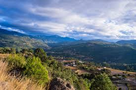
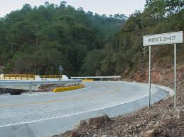
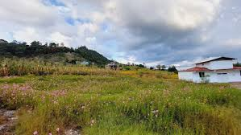

|
| |
| Principal Historia Curiocidades Ubicacion Contacto | La comunidad dePlan de Guadalupe fue fundada entre 1938-1940, antes llamado Guadalupe Hidalgo con tan solo 5 familias como habitantes, 3 años después fue cambiado el nombre como ahora lo conocemos Plan de Guadalupe (jaakuato).
 Jakuato que significa “pie del cerro”, hasta el momento en la actualidad hay mas de 400 habitantes en la comunidad, es uno de los pueblos más grandes dentro del núcleo agrario de Santa maría Cuquila.  En 1947 se empezó la construcción de la iglesia y agencia ( casa del pueblo) como agencia policía, años más tarde 1965 fue fundado la escuela primaria, y de ahí fueron fundadas las escuelas preescolar y telesecundaria , un dato es que después de 65 años fue cambiado a agencia municipal(2020).  |